Shakshat Virtual Lab 
INDIAN INSTITUTE OF TECHNOLOGY GUWAHATI
Fundamentals of cepstral analysis of speech
The objective of this experiment is to separate the excitation and vocaltract components of a given speech signal by cepstral analysis. The first step is to convert the speech into short-term segments of size 15-20 ms. Here the frame size is fixed to 20 ms. Then each frame is multiplied by a hamming window. Then cepstral representation of short-term speech is computed by finding the IDFT of the log magnitude spectrum. The Figure 2 given below shows a 20 ms voiced frame and its cepstrum in the quefrency domain. From the Figure this can be observed that vocaltract components are concentrated in the low quefrency region and excitation components are in the high quefrency region. The procedure given below computes the cepstrum from the given frame of speech.
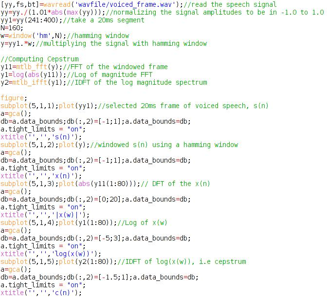

COMPUTING CEPSTRUM(VOICED SPEECH SEGMENT)
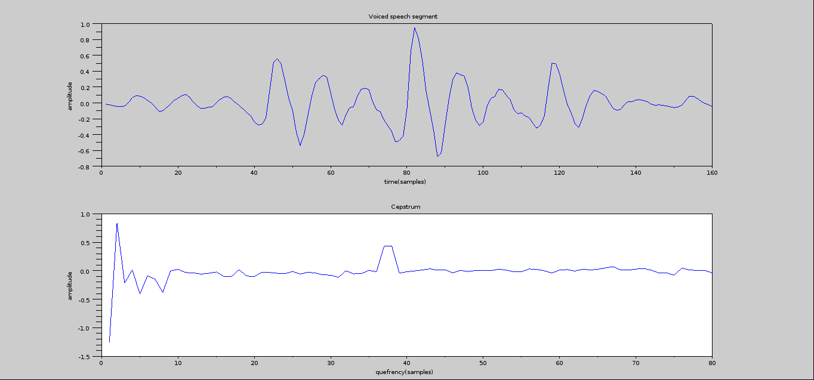
The following codes computes the cepstrum from an unvoiced segment of speech. This plots the output of various stages during the cepstrum computation from an unvoiced frame as given in Figure 3
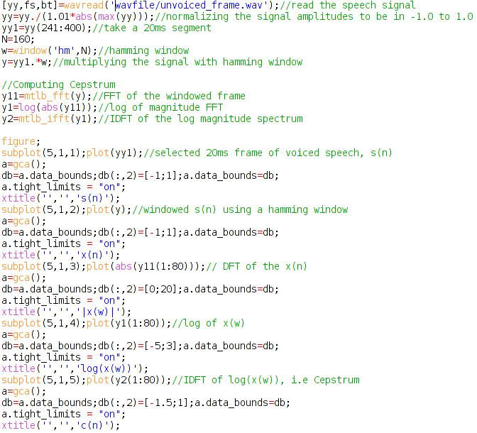
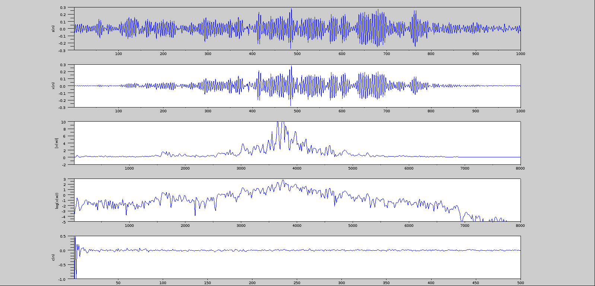
COMPUTING CEPSTRUM (UNVOICED SPEECH SEGMENT)
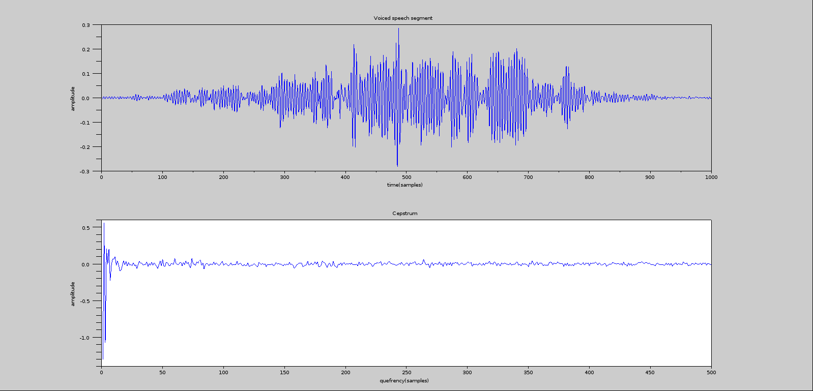
Liftering
Inorder to extract the deconvolved vocal tract component and excitation component from the cepstrum liftering has to be done. For extraction the vocaltract component low-time liftering is done and for excitation component high-time liftering is done. Figure 4.2 shows the vocaltract component extracted using low-time liftering. Here the liftering window is designed according to equation (6). The procedure for the low-time liftering is given below.
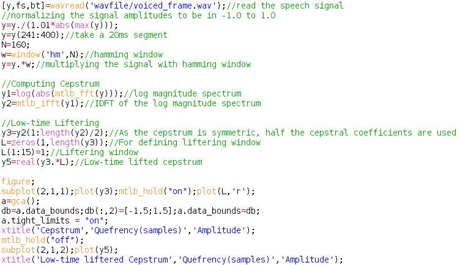
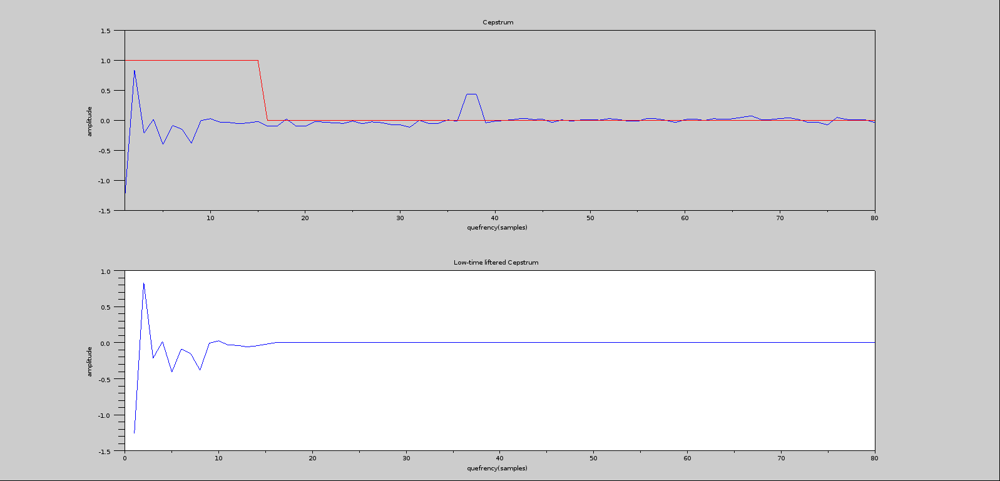
Similarly,Figure 6.2 indicates the excitation component extracted from the cepstrum by high-time liftering. The liftering window is designed according to equation (9) and the liftering cutoff quefrency is selected as 15 quefrency samples. The procedure for the high-time liftering is given below.
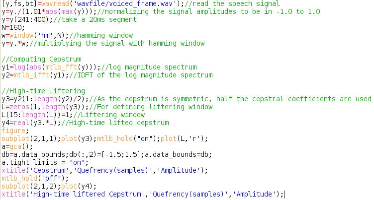
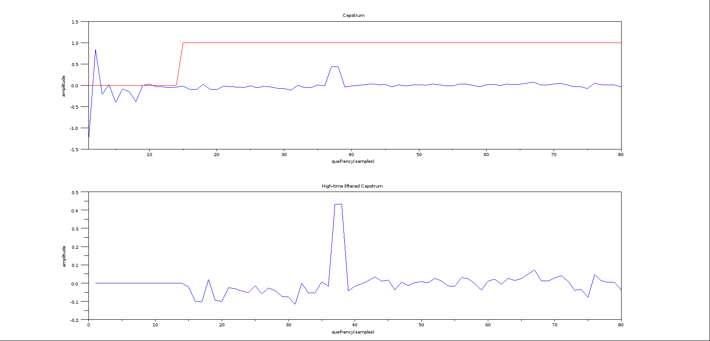
Pitch estimation by cepstral analysis
Pitch can be estimated as the quefrency location of the highest peak in the high-time liftered cepstrum. This strong peak of the high-time lifterd cepstrum can be observed from Figure 6.2. The procedure for pitch estimation is given below,
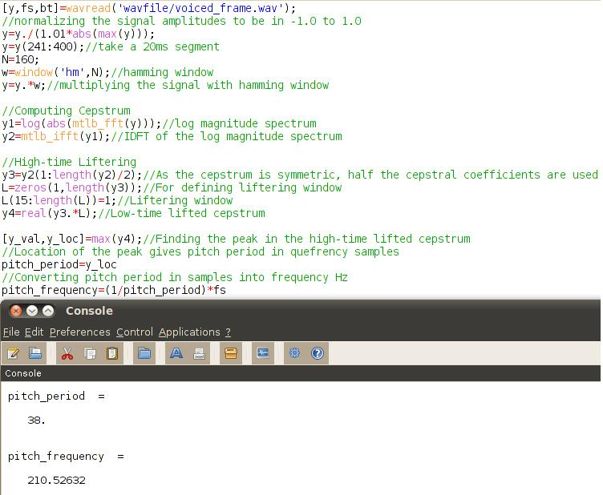
Formant estimation by cepstral analysis
Formant locations can be estimated from vocaltract spectral characteristics. This can be computed from spectral representation of the low-time liftered cepstral coefficients. As the DFT of the low-time lifterd cepstral coeffcients gives the corresponding smooth log magnitude spectrum, the formants can be located using a simple peak picking algorithm. Figure 5 represents the cepstrally smooth log magnitude spectrum of vocaltract components and the formant locations corresponds to the peaks in the spectrum. The procedure for computing the vocaltract spectrum and finding the formant locations are given below.
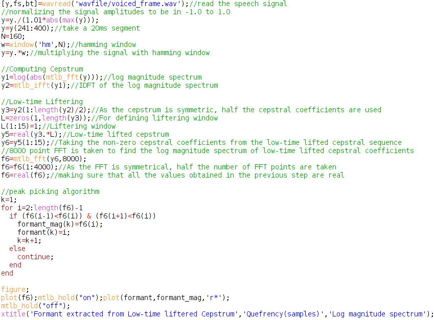
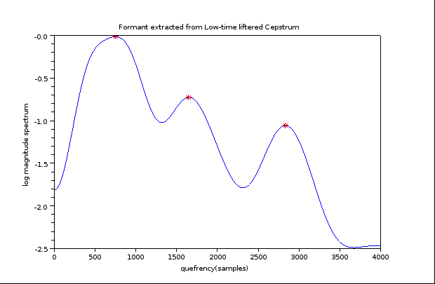